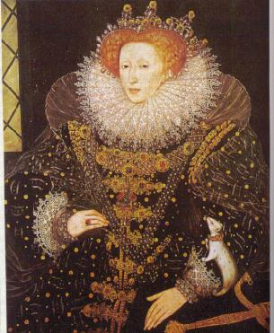

Alcune tappe della storia inglese
Gli approfondimenti pag.1/2> Società
Magna Charta. E' il primo documento che limita il potere dei re inglesi e riconosce alcuni diritti ai sudditi, in particolare ai baroni, ai mercanti e alle città. Stabilisce , tra l'altro, che nessun uomo libero può essere arrestato e imprigionato, espropriato o esiliato, se non in virtù di un giudizio legale dei suoi pari e secondo la legge del paese (Habeas corpus).
Il re si impegnò inoltre a non imporre nuove tasse senza l'approvazione del "grande consiglio del Regno", che dal 1242 prese il nome di Parlamento dei Lords. La Magna Charta fu sottoscritta nel 1215 dal re Giovanni Senza Terra della dinastia dei Plantageneti, dopo la sconfitta ad opera di Filippo IV, re di Francia, a Bouvines. Nel 1339 fu costituito il Parlamento dei Comuni che affiancò quello dei Lords, così il Parlamento inglese risultò formato da allora da due Camere.
Guerra dei Cento Anni. Si combatté tra Francia e Inghilterra tra il il 1337 e il 1453. A seguito di tale conflitto i re inglesi persero tutti i feudi in Francia e l'Inghilterra sul continente conservò soltanto Calais.
Guerra delle Due Rose. Iniziò subito dopo la Guerra dei Cento anni tra le famiglie nobili degli York e dei Lancaster per la successione al trono inglese. Durò fino al 1485 quando salì al trono Enrico VII Tudor, che diede inizio ad una dinastia molto importante per la storia inglese. Enrico ristabilì l'autorità della Corona sulla nobiltà feudale.
Chiesa Anglicana. Enrico VIII Tudor, dopo il rifiuto del papa Clemente VII di annullare il suo matrimonio con Caterina d'Aragona, contrasse ugualmente un nuovo matrimonio con Anna Bolena e dopo la scomunica papale staccò la chiesa inglese da quella romana. Con l'Atto di supremazia (1534), infatti, si proclamò reggente della chiesa inglese, che fu detta anglicana, nominò i vescovi, proibì di pagare le decime a Roma , abolì i monasteri e ne confiscò le proprietà.
Elisabetta I. Figlia di Enrico VIII e di Anna Bolena, regnò dal 1558 al 1603. Durante il suo lungo regno l'Inghilterra divenne una potenza marittima e iniziò l'espansione coloniale.Riconfermò lo scisma dalla Chiesa cattolica romana rinnovando nel 1559 l'Atto di supremazia e divenne il punto di riferimento per gli anticattolici di tutta l'Europa. Fece una politica estera antispagnola e per tutelare l'indipendenza dell'Inghilterra non si sposò. Protesse i letterati e gli artisti, sotto di lei fiorì il teatro, in particolare ricordiamo l'opera del grande drammaturgo William Shakespeare.

Elisabetta Tudor, Ritratto dell'ermellino, di anonimo.